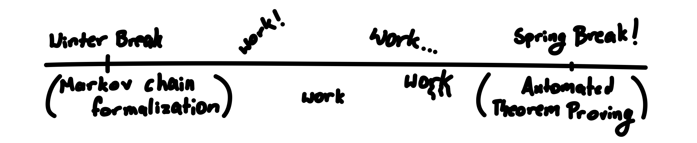

A Foray Into Lean, Markov Chains, and Automated Theorem Proving
Consider trying to solve a problem like the following:
Problem. Let \(a \in \R^d\), and \(C \subseteq \R^d\) be a non-empty, closed set. Prove that there exists some \(x_* \in C\) such that \[ |x_* - a| = \inf \{ |x-a| : x \in C \} .\]
How do you approach such a problem? Ideally, you have some context: some formal understanding of what the definitions are (i.e. you know what a closed set and infimum are), and some informal intuition for what the problem statement is actually saying (in a closed set, there is always some point that achieves the smallest distance to some other point).
Okay, let's suppose we have this context. Have you made any progress...?
Even with proper context, mathematics is hard; you may not be able to produce all the steps to go from a point A to a very faraway point B. One of reason for this is that there are so many tools (theorems, propositions, etc.) at disposal and so many ways for these tools to work together. We don't need all of these tools. If you somehow knew which tools to use then, with a little bit of cleverness and patience, you could turn a needle-in-haystack search to a game of fitting puzzle pieces together. Indeed, you could roughly chain together the conclusion of one theorem with the hypothesis of another to eventually arrive at the statement that you wanted.
Of course, this notion of a tool or dependency is a little fuzzy. Even the definition of say, a real number or subtraction, depends on everything from sequences and rational numbers to set theoretic axioms. By a tool, I really mean direct dependencies, whatever you'd usually see written in a proof of the theorem. If a proof of this problem were written down, you indeed probably wouldn't see mention to any of these minute things; they're ambient and shadowed under powerful definitions. With this in mind, let me tell you what dependencies we'll need (in some random order):
- (Bolzano-Weierstrass) A closed and bounded subset of \(\R^d\) is compact
- The intersection of a closed set and a closed set is closed.
- For any sequence in a compact set, there exists a convergent subsequence with the limit in that compact set.
- (Squeeze) If a sequence lies between two sequences that converge to the same limit, then that sequence converges to that limit.
- The Euclidean metric is continuous.
- (Infimum property) Suppose \(\ell = \inf A\). Then, if \(x > \ell\), there exists some \(a \in A\) such that \(a < x\).
- If \(x_n \to x\) and \(f\) is continuous, then \(f(x_n) \to f(x)\).
This definitely gives us a much better starting point. Of course, experience still matters here (and some geometric intuition is probably helpful too), but even just reading these, one can do some meta-reasoning and piece theorems together. For example, we're trying to output some point \(x^*\), so it's likely that it will be outputted by some some convergent sequence. We see that the Euclidean metric is continuous and continuous functions can be passed through sequences, so we'll probably be passing the metric through a sequence. Since we're trying to find some sequence converging to our point, we'll likely need to find a compact set (maybe take a bounded subset of \(C\)?).
Indeed, with enough filling in of gaps, one could probably arrive at a proof like the following (slightly verbose for the sake of pedagogy):
Proof
Set \(\ell := \inf \{ |x - a| : x \in C \}\), and let \(C' := \overline{B(a,\ell + 1)} \cap C\). Note that \(C'\) is bounded (it is contained in a ball of finite radius), and by (2.) it is closed.
Observe that for all \(n \ge 1\), \(\ell + 1/n > \ell\), so there exists some \(r \in \{ |x-a| : x \in C \}\) such that \(r < \ell + 1/n\). Consequently (by set definitions), there exists some \(x \in C\) such that \(|x - a| < \ell + 1/n\) by (6.). Since \(\ell + 1/n \le \ell + 1\), \(x \in C'\) too. Now, set \(x_n := x\) (essentially, we are creating a sequence of these such points for each \(n\)).
By (1.), \(C'\) is compact since it is closed and bounded. Since \((x_n)_n\) is a sequence in \(C'\), by (3.) there exist some subsequence of it, \((x_{n_k})_k\), that converges, i.e. \(x_{n_k} \to x^* \in C'\). Note that by (5.) and (7.), \(|x_{n_k} - a| \to |x^* - a|\). Since \(\ell \le |x_{n_k} - a| \le \ell + 1/n_k \le \ell + 1/k\), we have that both sides of the inequality converge to \(\ell\), so by (4.), we get that \(|x^* - a| = \ell\). This is what we wished to show.
Note that there were several slightly different routes we could have taken. We could have instead used something like the extreme value theorem to provide a minimum distance point. This being said, the proof and what it used would be roughly the same. In an informal sense, our direct dependencies are robust against small changes to paths in proofs; the dependencies in the list were still relevant and gave us clues into how the proof follows.
The Main Problem
I hope you'll excuse the rather long example (I also wanted to share a problem I rather liked!). This article, as the title suggests, is about three subjects: Lean, Markov chains, and automated theorem proving. The example above is relevant to the latter of those topics. Automated theorem proving is a rapidly growing field and has recently become one that I've been interested in. Seeing projects such as AxiomMath, Canonical, and others was really exciting! I wanted to make something similar or at least understand how they work. I don't believe AI or machine learning systems will replace mathematicians, but rather empower them and help us work on a higher level.
Nowadays, I see a lot of automated theorem proving systems (like those above) take on the burden of finding an entire proof. These systems are amazing, but the task of creating them seems rather daunting without being able to talk to experts and decipher what everything means. Thus, I came up with a slightly more reduced idea for an automated theorem proving system.
The key insight for my automated theorem proving system as well as
the above example is that, given the pieces of a puzzle,
mathematicians are certainly able to fit them together, so why not focus
machine learning on finding these pieces? Given the conclusion
(and perhaps other parts of a theorem), one can find theorems of similar
structure and relevance using statistical methods, and
these can be outputted to the human. Since such theorems are relatively
robust even to some changes in the theorem structures, this is a decent
metric and a way to empower human mathematicians with machine learning
methods. This also differs from traditional methods like
apply? or simp? in that it uses statistical
reasoning and pruning as opposed to just brute force search.
To describe the plan a bit less vaguely, I want to take the set of theorems I know about (possibly in a custom project or Mathlib), \(D\), and do the following:
- Extract the theorem information (perhaps the AST of the conclusion as a tree and other information like dependencies) via a map \(f : D \to \mathcal{T}\),
- Embed this information into a high-dimensional vector space via a map \(E : \mathcal{T} \to \R^d\),
- Train a bilinear form \(W \in \R^{d \times d}\) so that for \(t_1, t_2 \in \mathcal{T}\), one can compute a similarity score via \(E(t_1)^T W E(t_2)\),
- Given a fixed \(t_1\) (representing the theorem that we're trying to prove), compute the similarity across all \(t_2\) and compute some activation of these scores to get a list of confidence levels for how relevant each theorem is to \(t_1\), and
- Take the \(k\) most relevant theorems and output them to the user.
There's a lot to talk about and a lot I'm excited about, so I hope you enjoy the journey through Lean, Markov chains, and of course the WIP automated theorem proving system described above. Thank you in advance for reading!
Preface and Bookkeeping
Welcome back everyone! It's definitely been a little bit since the publishing of the last article (due to the good ol' CMU workload), but I'm gradually getting better at balancing work for college and work for myself (like this blog!). If not articles with much handholding, then definitely expect more technical articles with interactive components. At least, this is my hope, as often single ideas compound into projects with bigger and bigger scopes. In fact, this is precisely what happened to this article (see below).

Yeah, so it turns out I actually started the first component of this project (the Lean formalization of Markov chains) in January during winter break. I had originally intended to finish writing up a blog for it during winter break as well, but I ended up losing the battle to the warm, inviting, dangerous sirens (my bed). It was only later during the time leading up to spring break that I became interested in automated theorem proving and related methods and realized that some of the experience and work in the winter break project could be used.
Largely, I view the concept of this project in three main parts, and I shall organize this article accordingly:
- The Lean component. In order to explain this properly, I'll give a brief introduction to what Lean is, why one should care, and my impressions working with Lean in the project.
- The Markov chain component. Here, I give a bit of motivation for why I feel inspired to work on Markov chains (largely due to a great professor at CMU). In line with some remarks in the previous section, I present a somewhat hacky, somewhat cool proof to sidestep much of the difficult details of the Perron-Frobenius theorem.
- The automated theorem proving component. This is the component that I envisioned closer to spring break. I start with some motivation for the idea and offer the explanation and results of the first part of the automated theorem proving process: gathering data. Further, I discuss the machine learning component involved (this is a work in progress, but I'm excited to see how things turn out!).
As sorta per usual, you can find relevant code on my Github (here) under the MIT license.
Motivation for Lean
Lean is most commonly known as a language which allows you to interactively prove and state theorems. Recently, the language has gained a lot of backing, with popular projects such as PNT+ and the Liquid Tensor Experiment being written and popular names such as Terence Tao, Jeremy Avigad, and Alex Kontorovich endorsing it.
To give you a taste of what some Lean code looks like, here's a
theorem in the project along with proof. This states that that a
(discrete) probability distribution has at least one entry with positive
probability. It is done via a proof by contradiction. Indeed, the
negation of the conclusion (stored in h), is that
\forall x, p.\pi x \le 0. Combined with the fact that
probabilities are nonnegative, this implies that all the probabilities
are zero, which implies that the sum of all the probabilities is zero.
This contradicts the fact that probabilities sum to one.
lean
theorem has_pos_entry (p : ProbDistribution α) : ∃ x, p.π x > 0 := by
by_contra h
simp only [gt_iff_lt, not_exists, not_lt] at h
have h0 : ∀ x, p.π x = 0 := by
intro x
linarith [h x, p.nonneg x]
have hsum : ∑ x, p.π x = 0 := by
simp [h0]
absurd hsum
simp [p.sum_one]
Especially being at CMU, one hears about Lean all the time, and I was naturally curious about it. Thus, I decided it would be fun to try and do some hands-on learning over winter break by creating a project in Lean. I ended up choosing to formalize Markov chains in Lean (see later on why this choice). It turns out that this was a good choice for a subject, as the subject seems to be decently amenable to proofs in Lean.
Learning Lean?
But of course, this is jumping ahead in the narrative (tsk tsk we can't have that). At the point in time I decided to build something in Lean, I hadn't ever touched a theorem prover before. In fact, I didn't really have much of a clue what was going on in a theorem prover, how to use them, or how I should structure my approach towards a decent sized project. It seemed there was only one thing to do: a deep dive! I'm going to show just about everything I read and watched before going in and trying to build something. In retrospect, although I definitely learned the most from writing the actual project (the process of trying and failing again is universally important), the process of the deep dive was still helpful for motivation, breadth of knowledge, and finding a starting point. My hope is that some of these resources or this path as a whole will interest or help others reading this.
One of the simplest things you can do is just Google
learn lean programming language or
learn lean 4 (typing just "Lean" often yields undesired
results; also, beware that Lean had quite a view changes from version 3
to 4, so make sure you are looking at up-to-date resources). Perhaps one
of the first things you'll run into is the aptly named Learning Lean
4 guide. They have some nice resources, including the Natural Number
Game, but it might look a little overwhelming for a beginner and
might not be what you're looking for if you're eager to jump into an
actual project. I hold a similar opinion for Mathematics
in Lean. In general, resources like the above are nice, but only if
you have a base understanding of syntax and the existence of things
called tactics.
When I learn something new, I like knowing, at least at a high level, what is going on under the hood; this makes it easier to understand what's going on when things break and infer new patterns on the fly. Thus, I prioritized finding sources that didn't dumb things down too much. One resource that I found a little bit more traction with was Theorem Proving in Lean 4. The introduction alone helped clarify the type system, how some of the proof logic works, and how Lean works/looks as a programming language (more on Lean as a programming language later).
If I really had to take away one thing from Theorem Proving in Lean 4
besides syntax, it would absolutely be the Curry-Howard
correspondence. This forms the main basis of why proofs in
Lean actually work. The idea of the correspondence is that propositions,
such as x = x, can just be thought of as parameterized
types. The proof of such a proposition, then, become a program of that
type. Chaining programs together then equates to chaining results and
theorems together. Certain moves called tactics also
exist as encapsulated tools to help you prove theorems and chain these
programs together in different ways (certain tactics like
simp can even suggest theorems to you). Of course, this is
fuzzy and informal, but I highly recommend that you check it out. It's
super cool and relevant outside
of just theorem provers. One resource I found later that helped with the
intuition for the type system described above was this
playlist of short videos on homotopy type theory (a scary bunch of
words for a subject with elegant and simple core ideas).
Another avenue for learning I don't see often talked about online is watching someone else learn, struggle, and share their thoughts in real time. I don't mean watching them in-person (unless you are indeed fortunate to have someone like this), but rather on some site like Youtube or Twitch. This has always been something that's helped me engage in learning (I learned a decent bit of functional programming and Linux knowledge from people like Tsoding by watching streams), and it might be something to explore if you don't really like the tutorials written online. In particular, I really liked some of the below videos by Evan Chen:
- Formalizing USAMO 2003 Problem 5
- Formalizing USAMO 2014 Problem 3
- Formalizing USAMO 2002 Problem 4
Evan Chen is insanely smart, but even he struggles with Lean
sometimes, which is at the very least good for motivation when things
don't seem to make sense. I like this live sort of style because you can
at least poke into someone's train of thought and see how they came to
form ideas for what to try, what's broken, etc. Also, you get to
steal professionally and academically borrow the specific
tactics and conventions they use. For example, I didn't know about the
choose tactic until watching one of the above videos.
Other miscellaneous resources include Loogle and the Mathlib
docs. LLMs, while not the best at writing Lean, can also help you
search for tactics that you're better at explaining in natural language.
Moreover, tactics like apply? or simp? are
often helpful for pointing you in the right direction.
Another resource that cannot go without mention is Zulip! The community is super nice, and it's always pretty cool to see actual giants in mathematics (Terence Tao, etc.) talking in the forums about work.
Actually Writing Lean
The learning experience was fun, but I was itching to actually put some of my own code on the screen. Thus started the process of trial and error.
Before I jump into my commentary on working with the actual project,
let me clarify at least a little of what goes on when working with Lean.
It's particularly helpful if you write it inside a text editor that has
proper support (like neovim or VSCode) for its interactive component.
Consider the following situation (returning back to the code example
above): you are trying to prove that a probability distribution has at
least one entry of positive probability. Thus, it can be said that your
initial goal is to show that
\exists x, p.\pi x > 0 (where
p.\pi : \alpha \to \R and \alpha is the type
over which we have a probability distribution). Our proof of this will
look like a series of tactics, one after the other, that each
transform/simplify the goal in some way until we have simplified it to
something Lean can know is obviously true.
lean
theorem has_pos_entry (p : ProbDistribution α) : ∃ x, p.π x > 0 := by
by_contra h
simp only [gt_iff_lt, not_exists, not_lt] at h
have h0 : ∀ x, p.π x = 0 := by
intro x
linarith [h x, p.nonneg x]
have hsum : ∑ x, p.π x = 0 := by
simp [h0]
absurd hsum
simp [p.sum_one]
For example, the by_contra tactic starts a proof by
contradiction: it gives us the hypothesis h as a variable
that the conclusion isn't true, and it transforms our goal to be proving
False (i.e. we must prove absurdity, which is precisely
what a proof by contradiction is). Then, we simplify h a
little and then use the have tactic to initiate some
subproofs that give us, as variables, some absurd hypotheses. We then
use these absurd results to prove False, finishing the
proof by contradiction.
Essentially, Lean turns theorem proving into a game by making a proof a series of well-chosen moves. The interactivity offered by editors (showing what hypotheses are currently in the environment and what the current goal is) are downright essential to working well in Lean, and they are really cool and usable from a software standpoint. One resource that's initially helpful when actually trying to write with tactics is this cheatsheet. It doesn't contain all tactics, but it definitely has some of the more common ones.
Thus, I started writing some Lean code. I wrote some basic definitions for objects like Markov chains, probability distributions, irreducibility, etc. At first the process was a bit grueling and slow. You somewhat have to carefully think about what definitions you actually want to put and where, because this dictates what theorems you'll be proving and in what sequence. This isn't too bad for independent results, but it becomes a little bit more delicate when tackling a whole field of results, like Markov chains.
In order to not have to deal with too much expensive backtracking and second-doubting, I outlined the entire field of (initial) results that I wanted to prove. To illustrate, I had a bunch of theorems that looked like this:
lean
theorem IsReversible.convergence_bound
{M : MarkovChain α} {p : ProbDistribution α}
(hIrred : M.IsIrreducible) (hAper : M.IsAperiodic)
(hRev : M.IsReversible p) :
∀ t > 0, ∀ x y, ∃ C > 0, |((M.P ^ t) x y) / (p.π y) - 1| ≤ C * (1 - M.SpectralGap) ^ t := by
sorry
In other words, I had a bunch of somewhat complex looking results
(the conclusions of the theorems), but none of the actual proofs (the
sorry tactic is a funnily named one that just means the
proof will be filled in later). The outline ended up looking something
like the following:
Basic.lean: Basic definitions like Markov chains and probability distributions.Irreducible.lean: Results on irreducibility and reachability.Period.lean: Results on aperiodic Markov chainsLazy.lean: A simple transformation that makes chains aperiodic.Reversible.lean: Convergence results for reversible Markov chains.Spectral.lean: Spectral gap definition, and eigenvalue results for Markov chains.StationaryDistribution.lean: Existence and uniqueness results for stationary distributions of Markov chains under certain conditions.
Once the outline was finished, it was time to move to actually
proving things. This part was also accompanied by a big learning curve.
However, once I got decently competent in handling tactics and searching
for them, the process actually felt really fun! I think working with a
proof assistant really helps you hone your proof skills in catching edge
cases and being clear in assumptions. Moreover, the gamification of a
proof makes it really satisfying to see the
Goals accomplished! message once you figure everything out.
While it may be nice to have the proof on paper before you write it in
Lean, I also found it a lot nicer to stay at the screen and keep the
process in my mind. It feels like the difference between writing a
passage in English and translating it into Spanish versus natively
speaking in Spanish. The latter is harder to get used to, but it feels
much less clunky, especially since there are some nuances unique to
Spanish that don't always translate well when working with English.
The (mostly completed; I would like to return later and put in proofs for the spectral results) end results are of course found on Github if the reader is curious how the process went. If you look at the commit changes, you can see the progression of what I worked on over time.
To conclude this section, I'll give some remarks on what I noticed while working:
- Although the Lean docs are very helpful when you're trying to find specific results, there is also a lot more room for improvement in terms of documentation and explanations. Perhaps an effort could be made to comment more of Mathlib.
- To build more on the English versus Spanish analogy from before,
writing in Lean using Mathlib is not quite the same as how you'd write
things in regular mathematics; often you find yourself pulling for
different kinds of machinery. While in mathematics we may use different
conventions depending different levels of generality that you can easily
refer to (because the reader will know what's going on and fill in the
gaps), Mathlib usually has one very general tool for the job. For
example, a mathematician writing on paper doing one-variable real
analysis can refer to limits via the usual epsilon-delta definition
without having the need for extra machinery that may clutter things. If
you're working in a slightly more advanced setting, you might reach for
some topological notion of a limit. When working with Mathlib, you use
Bourbaki's
theory of filters for most everything. In Mathlib, to access matrix
multiplication, you have to view matrices as an instance of an
HMuland unravel its implementation ofHMul.hMul(this is assuming the matrix element type\alphaprovides[Fintype \alpha] [AddCommMonoid \alpha]). Luckily, most of this isn't directly straining the user (the compiler can figure most of the things out), but of course you can see it's still some more mental overhead than just writing on paper. - As an explanation for the above, consider the following: in some sense, there is a greater opportunity cost to writing Lean code than writing math because while math ambiently exists in the universe of knowledge, Mathlib is a real library that needs to maintain modularity and readability. Adding another concept means defining that concept, connecting it to others through several theorems, and so on when one can really bundle this up in one general concept.
- One thing that is slightly unfortunate about instancing is that (at least for me), it's a little bit annoying sometimes to implement a second instance of a typeclass on a type. Ordinarily this wouldn't be a problem, but it turns out that some Markov chain results rely on this. In particular, if \(\pi\) is the stationary distribution of an irreducible, aperiodic, reversible Markov chain, then \[ \langle u, v \rangle_{\pi} = \sum_{x \in \alpha} \pi(x) u(x) v(x) \] is an inner product. Thus, \(\R^n\) forms an inner product space with respect to this product. Due to the diamond dependency problem, you cannot directly add this instance to \(\R^n\) in Lean. Instead, you must create a type synonym, inherit all the necessary dependent instances by hand, and then implement your instancing of inner products. Anytime you want to go between inner product instances, you really have to go between whole types. This is a little unfortunate, but I see why it works like this. In a perfect world, I would imagine keeping everything the same except for adding some optional, lower priority instances that you can manually choose, but I'd imagine this would make other scenarios complicated.
Markov Chains are (Really) Cool!
A little bit ago, I promised to tell you why I chose to formalize Markov chains of all things in Lean. One obvious reason was because I hadn't seen any related projects on Github, but I had also seen Markov chains in a new light over the course of the fall semester due to my 21-242 professor, Wesley Pegden. Traditionally (at in my high school linear algebra class), the unit on Markov chains felt composed of contrived examples (I don't think the weather truly follows a Markov chain, guys), so I didn't understand the motivation behind them. It was only until 21-242 (in which we took a long digression on Markov chains because Pegden likes them) that I started seeing how powerful they could be when used properly.
The basic idea of Markov chains is as follows: you have some starting state and each state has some probability of transitioning to one of the other states. For very small state spaces, their behavior is almost a little trivial (this is in part because you can simply compute the whole transition matrix and any powers that you want). The real power of Markov chains lies in situations when the state spaces are very large. In this case, you can only compute one or a few evolutions of states, and the states themselves can represent rather complicated objects. Another tenet of Markov chains is that, under certain conditions, any Markov process always converges to a stationary distribution. The great thing about Markov chains is that often we are able to select the process itself, meaning we can choose a set of transitions that computes some process, perhaps with a stationary distribution that gives us some information about the underlying process.
A very surprising example of this was that Markov chains allow us to draw from a distribution of bipartisan congressional districting maps. Pedgen was then able to use this in a statistical test to testify in front of Supreme Court that a certain state's district lines were gerrymandered. The reason why Markov chains work so well as opposed to other methods is that the space of congressional district arrangements are huge! I highly encourage those interested to read further.
In order to properly formalize the theory of Markov chains, I had to first actually be clear on what the theory of Markov chains contained. I had a small idea of the basic map of results (irreducibility, aperiodicity, reversibility, etc.) from 21-242, but I wanted to explore even more. For this, I referred to the following two sources:
- Markov Chains and Mixing Times
- Gautam Iyer's Notes for 21-326: Markov Chains: Theory, Simulation, and Applications
These are some pretty nice sources, and it turns out that Iyer is also my professor this semester for 21-269. In these sources, I learned some nice proofs for standard results like aperiodicity and irreducibility, but some of Pegden's own proofs turned out to be far more amenable to Lean formalization.
Of course, while I was referring to the sources above for proofs, I was certainly not copying their proofs line-by-line. It turns out that Lean formalization still requires a decent degree of individual creativity to sidestep certain problems and the quirks of Mathlib. One thing that massively differed in my codebase from the sources was the organization of results. In 21-242 and many other sources, the Perron-Frobenius theorem is a large theorem that gives you quite a few things under a few assumptions. However, some of the results (such as a unique stationary distribution) were already proved in other sections under roughly the same assumptions. Thus, I reduced the power of the statement of Perron-Frobenius until it was no longer redundant with other theorems. The end result, shown below, seems far easier to prove now (indeed, all you need now is the extreme value theorem and a well chosen compact set):
lean
lemma positive_exists_stochastic_eigenvector {P : Matrix α α ℝ}
(hPos : P.IsPositive) (hRowSum : P.IsRowSumOne) :
∃ p : α → ℝ, (∀ i, p i ≥ 0) ∧ Matrix.vecMul p P = p := by
sorry
In particular, all we're saying is that if \(P\) is a stochastic, positive matrix, there exists some stochastic eigenvector \(p\) with associated eigenvalue \(1\). The fact that \(p\) is strictly positive comes from another result on the stationary distribution of irreducible chains. Uniqueness also comes from irreducibility and aperiodicity.
All that was really left was to show that the Perron-Frobenius eigenvalue (specialized to \(1\) in this case) was the dominant eigenvalue. The Lean statement was as follows:
lean
theorem irreducible_aperiodic_unique_max_eigenvalue {M : MarkovChain α}
(hIrred : M.IsIrreducible) (hAper : M.IsAperiodic) :
∀ μ, M.HasEigenvalue μ ↔ μ = 1 ∨ ‖μ‖ < 1 := by
sorry
I thought long and hard about this, and I was worried that there wouldn't be a good way to prove this (and thus I would have to go back to the whole drawing board for Perron-Frobenius), but with some luck, I came up with another way to sidestep this using only elementary results. Consider the following proof sketch below:
Proof
Let \(\rho\) be an eigenvalue for \(P\) with eigenvector \(v\) (\(v\) can contain possibly complex entries). By here, for example, we know that \(|\rho| \le 1\), so it suffices to show that if \(|\rho| = 1\), then \(\rho = 1\). Suppose \(|\rho| = 1\) so that we can write \(\rho = e^{2 \pi i \alpha}\), where \(\alpha\) is a unique real number in \([0, 1)\).
Since \(P\) is irreducible and aperiodic, there exists some power \(k \ge 1\) such that \(P^k\) (and any successive power) contains strictly positive entries. Choose \(\ell\) as follows:
- If \(\alpha\) is rational with \(\alpha = p / q\), then choose \(\ell \ge k\) that is coprime to \(q\).
- If \(\alpha\) is irrational, choose \(\ell = k\).
In both cases, \(\ell \ge k\), so \(A := P^\ell\) contains strictly positive entries. Moreover, \(\rho^\ell = 1\) would imply that \(\rho = 1\) by how we've chosen \(\ell\). Now, consider \(i \in \N\) that maximizes \(|v_i|\). By triangle inequality, \[ |v_i| = |\rho^\ell v_i| = |(A v)_i| = \left| \sum_{j = 1}^{n} A_{ij} v_j \right| \le \sum_{j = 1}^{n} A_{ij} |v_j| .\] Since \(A_{ij} > 0\) for all \(j\) and \(A\) is stochastic, it follows from maximality of \(|v_i|\) that \(|v_1| = |v_2| = \cdots = |v_n|\). Moreover, the equality case of the triangle inequality tells us that each of \(v_1, v_2, \ldots, v_n\) have the same argument. Thus, \(v_1 = v_2 = \cdots = v_n\). Putting \(Av = v = \rho^\ell v\), we have \(\rho^\ell = 1\), so \(\rho = 1\).
This resonates with what I wrote above about Lean code having a higher cost. It is more economical to sidestep larger results by proving weaker results that, when combined, give just enough for what you need. I feel that this is where the creativity of working with theorem provers comes in. Theorem provers give us a new perspective on how to tackle proofs, and it's really exciting to think about where math could go with this as some fields move closer to computer formalization :)
Trying a Hand at Automated Theorem Proving
I've kept you waiting long enough! It's time for some extrapolating. Leading up to the course of spring break, I realized that not only could I formalize some mathematical concept in Lean, but I could actually use this knowledge of the language to go a bit further and make something in the lines of automated or machine-assisted theorem proving. Let me outline how exactly this is possible.
While Lean is best known for its capabilities as a theorem prover, I
want to clarify that it is also a genuine functional
programming language (like Haskell, OCaml, Clojure, etc.) that you
could make non-math-related programs with. Indeed, the reason why Lean
functions so well as a theorem prover is roughly due to the fact that is
a functional programming language with a very extensible type system and
macro system. One very cool application of this is that you can code
procedures as you would in any other programming language and then
prove things about these procedures. As an example, one can
formalize cryptography proofs
and such in Lean. Another cool thing I found out while coding some of
the automated theorem proving component is that if you don't label a
recursive function as partial (a keyword to indicate that
the function may not be total, i.e. return on all inputs), the Lean
compiler itself will try to automatically prove that the function
terminates through inductive reasoning, and if it cannot prove as such
it will tell you.
The feature I'm going to take advantage of, in addition to the above,
however, is the fact that the Lean programming language is
written in Lean! This means that the language has first-class
support for its own
expressions within the language. For example, Lean represents
Lean.Expr as just a simple inductive (or sum) type. For
simplicity, I'm going to prune some of the irrelevant details (like
metadata cases and some more complicated type system stuff; they end up
not mattering in my code either). Thus, the definition of an expression
looks roughly like the following:
lean
inductive Expr where | bvar (deBruijnIndex : Nat) | const (declName : Name) | app (fn : Expr) (arg : Expr) | lam (binderType : Expr) (body : Expr) | forallE (binderType : Expr) (body : Expr) | letE (type : Expr) (value : Expr) (body : Expr) | literalNum (n : Nat) | literalStr (s : String) | proj (idx : Nat) (struct : Expr)
For those curious, bvar takes in what is called a De Bruijn
index, but this is just some programming language theory for
representing variable bindings efficiently. Constants, function
applications, lambda expressions, universal quantifiers, let
expressions, and literals are pretty straightforward. Projections just
mean accessing elements of structures (like p.\pi accesses
the \pi field of p). Remarkably, the semantics
are rather simple!
However, we can go much further. Whenever you compile a Lean project
(to ensure that all theorems check correctly), it gets stored in a
subdirectory of the .lake directory. Lean, in a separate
process, can read the data and information of this compiled program and
compute with it. In other words, if I have a project with a large array
of theorems and definitions, I can write a program in Lean to access
these theorems (which are represented in the format above as just
expressions), iterate over them, process them, and basically do whatever
I want with them. I also can accessed other libraries that have been
imported within the project. It turns out the process of doing all of
this is rather simple and abstracted away in a few handy functions of
the standard library.
Thus, the following plan emerged:
- Collect all the theorems defined locally in the project, and for each theorem collect its dependencies (i.e. constants names that correspond to theorems). Call these the user theorems, denoted by \(\mathcal{U}\).
- Collect most (all, if it is computationally feasible) theorems from modules imported by the project. Call these the external theorems, denoted by \(\mathcal{E}\).
- Output these to separate files for processing
Note that we are only collecting dependencies for the user theorems. Indeed, we only care about matching theorems that are relevant for the project the current user is working on, and sometimes the external theorems are too numerous (what if the user imports the entirety of Mathlib?) and verbose (it isn't very productive to suggest a theorem used as a dependency in proving that addition is commutative, or something silly like that).
Of course, this process isn't perfect, but the hope is that we can
capture enough data regarding the theorems and what they're related to
that we can try some machine learning methods on them. Indeed, our main
line of strategy will be to compute similarity scores between these
Exprs (they are essentially ASTs). It should be noted,
however, that there is some difference between what you see in the
editor and what you would see in the expressions obtained from this
method, largely due to compilation. To illustrate this, consider again
this theorem:
lean
theorem has_pos_entry (p : ProbDistribution α) : ∃ x, p.π x > 0 := by ...
The compiled output, however, is a bit more precise and formulaic, being something to the effect of the following (I've added in proper variable names as opposed to indices):
lean
∀ t0 : Sort 1,
∀ t1 : Fintype t0,
∀ t2 : DecidableEq t1,
∀ p : ProbDistribution t0 t1 t2,
Exists
(fun x : p =>
GT.gt
(OfNat.ofNat (Zero.toOfNat0 Real.instZero Real) 0 Real)
(ProbDistribution.π t0 t1 t2 p x)
Real.instLT
Real)
p
Luckily, this transformation is uniform across all theorems, and so it won't affect efficacy the machine learning process much. That being said, it will probably affect performance in the sense of outputting ASTs of much greater height (in the graph-theoretic sense).
Over spring break, I coded this procedure up in Lean (see the file
Relevant.lean in the Github repository). In addition, I
tried to make the imports to Mathlib within the Markov chain files as
minimal as possible. In total, there were
- 45 user theorems, which amounted to 263K of serialized output.
- 102924 external theorems, which amounted to roughly 0.5 GB of serialized output.
The user theorems are reasonably sized, but the external theorems are massive! The actual total number of dependencies of the theorems is likely much smaller, which probably suggests that transitive dependencies are blowing up the file size even more. While the size creep is a tad worrying for efficiency, at least there's a lot of data.
This is as far as I got over spring break, but my immediate plans are to put this data (once I can get it down to a reasonable size) into a machine learning model. The rest of the content, save for the conclusion, will be left towards describing this model.
The first thing, as with any sort of machine learning, is going to be taking this data, in the form of trees, and mapping it in a consistent way to a high-dimensional vector space, like \(\R^d\) (where \(d\) is something on the order of 128 to 256). To do so, we'll rely on the recursive structure of the tree. For the base cases, we'll probably rely on some standard vector encodings of natural numbers and strings (perhaps CharCNN?). For the \(i\)th recursive case, we'll compute the vector embedding of some tree via the activation \(\sigma(W_i v + b_i)\), where \(W_i, b_i\) are learnable weights and biases indexed according to the corresponding case. It might be better for training to uncurry any function applications and use some sort of LSTM model for the list of arguments.
The next step in training is defining a suitable loss function. Suppose we have the following:
- A set \(\mathcal{U}' \subseteq \mathcal{U}\), which is a subset of the user theorems that we will be training on,
- A function \(D : \mathcal{U} \to \mathcal{T}\) such that \(D(u)\) is the set of theorems that \(u \in \mathcal{U}\) depends on, and
- A function \(L : \mathcal{U} \to \mathcal{T}\) such that \(L(u) \subseteq \mathcal{T} \setminus D(u)\) is some randomly sampled set (of roughly equal size to \(D(u)\)) of theorems that \(u\) is not dependent on.
The set \(D(u)\) serves as positive matches for similarity, while \(L(u)\) serves as the set of negative matches. Note that we need both positive and negative pairs in order to train for classification, otherwise the model will just return a constant output. Using these, we can construct a modified Binary Cross-Entropy loss function for our task, given as follows: \[ \mathcal{L}_{\mathrm{BCE}} = - \frac{1}{N}\sum_{u \in \mathcal{U}'} \left( \sum_{v \in D(u)} \log \left( \sigma(E(u)^T W E(v)) \right) + \sum_{v \in L(u)} \log \left( 1 - \sigma (E(u)^T W E(v)) \right) \right) ,\] where \(\sigma\) is something like a sigmoid activation, and \(N\) is a constant for normalization such that \[ N = \sum_{u \in \mathcal{U}'} \left( |D(u)| + |L(u)| \right) .\] Note that we use a sigmoid activation to map the raw similarity score (a real number), to something in the range \([0, 1]\).
While this looks slightly complicated, it suffices to analyze the loss for a single term to understand what's going on. For a given theorem \(u \in \mathcal{U}'\), there are some theorems it depends on and theorems it doesn't depend on. For theorems that \(u\) does depend on, we want the loss to be low when the probability of classification as dependent (which is correct) is high. For theorems that \(u\) definitely doesn't depend on, want the loss to be high when the probability of classification as dependent is high. Thankfully, we indeed get this behavior via the \(-\log(p)\) and \(-\log(1 - p)\) components within the loss. The specific weights in front of these components can be tweaked depending on how the data actually ends up looking, but otherwise this is roughly how the model should look.
Conclusion
This has definitely been one of longer articles I've written (roughly 8000 words)! I almost feel at a weird place writing this conclusion because I've dumped so much of the insight I wanted to show within the content. I've had a lot of fun not only formalizing in Lean, learning about Markov chain results, and coding functionally in Lean, but also writing this article. A lot of my ideas relating to this were floating around in the fuzzy space of my head, but it was only after putting them down on the blog that I felt like I had a structured idea of them. I keep on returning to the quote that says "writing is thinking."
Of course, the project isn't done yet; I still have to finish the training component, and I'm rather excited to do so (it will likely be my biggest machine learning project). It'll be really cool to share some of the results (successful or not) once I can actually get a decently trained model working. Until then, I hope those reading will enjoy the content I have so far.
It's a shame that the time to pursue projects outside of the workload at CMU is often not nearly as much as we want. I've been talking about this a lot with friends recently, but I feel as though some areas can be improved while still retaining the same technical and precise spirit of classes. For a while now, I've been toying with the idea of writing an article on how I would fix and structure the CMU curriculum (at least, the classes that I have taken) if I could. Depending on how motivated I am, this next article could come pretty soon.
As Grant Allen said, "never let schooling interfere with your education." The content of classes and curriculum are no doubt important, but I feel as though it is critical one retains the same creativity and curiosity that led up to college. Ultimately, university is the time of life where you grow to make decisions that serve you, even if they do not align with the rigorous boundaries of a system. I'd encourage everyone to try and put time into things that will yield new perspectives. I say this in light of knowing how valuable even just an extra hour of time and energy is here.
That's enough philosophy for now, though. Until the next writing, take care and have some fun too! (And if you immediately scrolled all the way down here without reading, you better scroll back up, buddy)